기계설계기사 (2012-05-20 기출문제)
1과목: 재료역학
1. 길이가 L이고 직경이 d인 축과 동일 재료로 만든 길이 3L인 축이 같은 크기의 비틀림모멘트를 받았을 때, 같은 각도만큼 비틀어지게 하려면 직경은 얼마가 되어야 하는가?
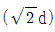
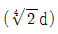
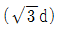
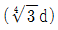
(정답률: 60%)

2. 그림과 같이 지름 6mm 강선의 상단을 고정하고 하단에 지름 d1 = 100mm의 추를 달고 접선방향에 F = 10N 의 힘을 작용시켜 비틀면 강선이 ø=6.2°로 비틀어졌다. 이 때 강선의 길이가 ℓ=2m라면 이 강선의 전단 탄성계수는 약 몇 GPa 인가?
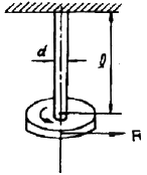
- 12
- 84
- 18
- 73
(정답률: 34%)
3. 그림과 같이 평면응력 조건하에 600kPa의 인장응력과 400kPa의 압축응력이 작용할 때 인장응력이 작용하는 면과 30° 의 각도를 이루는 경사면에 생기는 수 직응력은 몇 kPa인가?
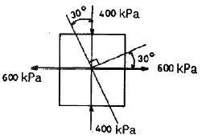
- 150
- 250
- 350
- 450
(정답률: 58%)
4. 중앙에 집중 모멘트 M0(kN·m)가 작용하는 길이 L의 단순 지지보 내의 최대 굽힘응력은? (단, 보의 단면은 직경이 2a인 원이다.)
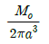
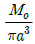
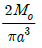
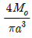
(정답률: 60%)
5. 그림과 같은 일단고정 타단 지지보에서 B점에서의 모멘트 Mb는 몇 kN·m 인가? (단, 균일단면보이며, 굽힘강성(EI)은 일정하다.)
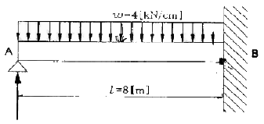
- 800
- 2000
- 3200
- 4000
(정답률: 58%)
6. 그림에서와 같이 지름이 50cm, 무게가 100N의 잔디밭용 롤러를 높이 5cm의 계단위로 밀어서 막 움직이게 하는데 필요한 힘 F는 몇 N인가?
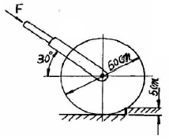
- 200
- 87
- 125
- 153
(정답률: 50%)
7. 길이 3m의 부재가 하중을 받아 1.2mm 늘어났다. 이때 선형 탄성 거동을 갖는 부재의 변형률은?
- 3.6×10-4
- 3.6×10-3
- 4×10-4
- 4×10-3
(정답률: 58%)
8. 순수굽힘을 받는 선형 탄성 균일단면보의 전단력 F와 굽힘모멘트 M 및 분포하중 ω[N/m]사이에 옳은 관계식은?
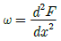
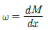
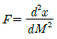
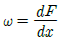
(정답률: 60%)
9. 그림에서 클램프(clamp)의 압축력이 P = 5 kN 일때 m-n단면의 최소두께 h를 구하면 몇 cm 인가? (단, 직사각형 단면의 폭 b=10mm, 편심거리 e=50mm, 재료의 허용응력 σw=150MPa이다.)
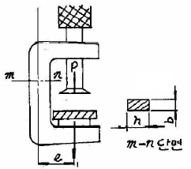
- 1.34
- 2.34
- 3.34
- 4.34
(정답률: 53%)
10. 다음과 같은 부재에 축 하중 P=15kN이 가해졌을 때, x방향의 길이는 0.003mm 증가하고 z 방향의 길이는 0.0002mm 감소하였다면 이 선형 탄성 재료의 포아송 비는?
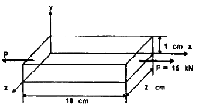
- 0.28
- 0.30
- 0.33
- 0.35
(정답률: 28%)
11. 그림과 같이 노치가 있는 둥근봉이 인장력 P = 10kN을 받고 있다. 노치의 응력 집중계수가 α= 2.5 라면, 노치부의 최대응력은 약 몇 MPa인가? (단위 : mm)
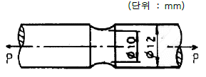
- 3180
- 51
- 221
- 318
(정답률: 56%)
12. 그림과 같이 10 cm × 10 cm의 단면적을 갖고 양단이 회전단으로 된 부재가 중심축 방향으로 압축력 P가 작용하고 있을 때 장주의 길이가 2m라면 세장비는?
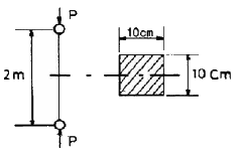
- 890
- 69
- 49
- 29
(정답률: 50%)
13. 그림과 같은 보가 집중하중 P 를 받고 있다. 최대굽힘 모멘트의 크기는?
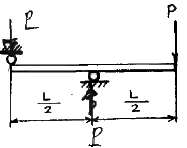
- PL
- PL/2
- PL/4
- PL/8
(정답률: 31%)
14. 동일한 전단력이 작용할 때 원형 단면 보의 지름 D를 3D로 크게 하면 최대 전단응력 τmax는 어떻게 되는가?
- 9τmax
- 3τmax
- 1/3τmax
- 1/9τmax
(정답률: 48%)
15. 지름 d인 원형 단면봉이 비틀림 모멘트 T를 받을 때, 봉의 표면에 발생하는 최대 전단응력은? (단, G는 전단 탄성계수, θ는 봉의 단위 길이마다의 비틀림 각이다.)
- 1/2G2θd
- 1/2Gθ2d
- 1/2Gθd2
- 1/2Gθd
(정답률: 53%)
16. 단면적이 일정한 강봉이 인장하중 W를 받아 탄성 한계내에서 인장응력 σ가 발생하고, 이 때의 변형률이 ε이었다. 이 강봉의 단위체적 속에 저장되는 탄성에너지 U를 나타내는 식은? (단, 강봉의 탄성계수는 E 이다.)
- U=1/2Eσ2
- U=1/2σε2
- U=1/2Eε2
- U=1/2Eε
(정답률: 34%)
17. 그림과 같이 외팔보의 중앙에 집중 하중 P가 작용하면 자유단의 처짐은? (단, 보의 굽힘강성 EI는 일정하고, L은 보의 전체의 길이이다.)
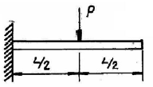
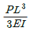
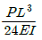
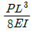
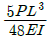
(정답률: 58%)
18. 두 변의 길이가 각각 b, h인 직사각형의 한 모서리 점에 관한 극관성 모멘트는?
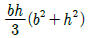
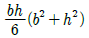
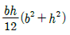
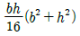
(정답률: 9%)
19. 그림과 같이 재료와 단면적이 같고 길이가 서로 다른 강봉에 지지되어 있는 보에 하중을 가해 수평으로 유지하기 위한 비 a/b 는?
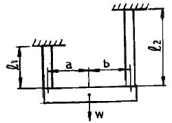
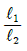
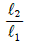
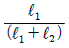
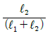
(정답률: 62%)
20. 길이 3m의 직사각형 단면을 가진 외팔보에 단위 길이당 ω의 등분포하중이 작용하여 최대 굽힘응력 50MPa이 발생할 경우 최대 전단응력은 약 몇 MPa인가? (단, 단면의 치수 폭×높이(b×h) = 6cm×10cm 이다.)
- 0.83
- 1.25
- 0.63
- 1.45
(정답률: 65%)
2과목: 기계제작법
21. 용접 피복제의 역할로 틀린 것은?
- 아크의 연속성, 집중성, 안정성을 준다.
- 용접에 필요한 원소를 보충한다.
- 전기 절연작용을 한다.
- 모재 표면의 산화물을 생성해 준다.
(정답률: 72%)
22. 일반적으로 저탄소강을 초경합금으로 선반가공 할 때, 힘의 크기가 가장 큰 것은?
- 이송분력(axial component of cutting force)
- 배분력(radial component of cutting force)
- 주분력(vertical component of cutting force)
- 부분력(sub-component of cutting force)
(정답률: 67%)
23. 스플라인 구멍의 홈을 가공하거나 복잡한 형상의 구멍을 정밀하게 가공할 수 있고, 대량생산을 하기에 적합한 공작기계는?
- 보링머신
- 슬로팅 머신
- 브로칭 머신
- 펠로즈 기어 셰이퍼
(정답률: 75%)
24. 공기마이크로미터의 특징 설명으로 틀린 것은?
- 배율이 높고 정도가 좋다.
- 접촉 측정자를 사용하지 않을 때에는 측정력이 거의 0에 가깝다.
- 측정물에 부착된 기름이나 먼지를 분출공기로 불어내므로 보다 정확한 측정이 가능하다.
- 비교측정기로서 큰 치수(1개)와 작은 치수(2개)로 이루어진 마스터가 최소 3개 필요하다.
(정답률: 90%)
25. 선반의 전 소비동력은 다음 중 3가지 동력을 합한 것이다. 이 3가지에 해당하지 않는 것은?
- 손실동력
- 유효절삭동력
- 이송동력
- 회전동력
(정답률: 42%)
26. 두께 2mm, C = 0.2%의 경질 탄소강판에 지름 25mm의 구멍을 펀치로 뚫을 때, 전단하중 P = 30.80 kN 라면 전단응력은 약 몇 MPa 인가?
- 196
- 212
- 246
- 288
(정답률: 38%)
27. 금속산화물의 산소와 알루미늄 분말과의 화학반응에 의해 발생하는 열을 이용한 용접 방법은?
- 원자수소 용접법
- 프로젝션 용접법
- 테르밋 용접법
- 플래시 용접법
(정답률: 75%)
28. 다음 중 센터리스 연삭기에 사용하지 않는 부품은?
- 양 센터
- 조정 숫돌
- 연삭 숫돌
- 가공물 지지대
(정답률: 85%)
29. 인발가공에서 인발 조건의 인자(因子)로 거리가 먼 것은?
- 역장력(back tension)
- 마찰력(friction force)
- 다이각(die angle)
- 절곡력(folding force)
(정답률: 42%)
30. 가스침탄법에서 침탄층의 깊이를 증가시킬 수 있는 첨가 원소는?
- Si
- Mn
- Al
- N
(정답률: 70%)
31. 다음 중 다이아몬드, 수정 등 보석류 가공에 가장 적합한 것은?
- 초음파 가공
- 방전 가공
- 수퍼피니싱 가공
- 전해 가공
(정답률: 75%)
32. 연삭숫돌의 결합제(bond)중 주성분이 점토와 장석이며 연삭숫돌의 90% 이상을 차지할 만큼 많이 사용하는 결합제는?
- 비트리파이드 (vitrified)
- 실리케이트 (silicate)
- 레지노이드 (resinoid)
- 셀락 (shellac)
(정답률: 63%)
33. 피측정물을 확대 관측하여 복잡한 모양의 윤곽, 좌표의 측정, 나사 요소의 측정 등과 같이 단독 요소의 측정기로는 측정할 수 없는 부분을 측정하기에 적합한 측정기는?
- 피치 게이지
- 나사 마이크로미터
- 공구 현미경
- 센터 게이지
(정답률: 70%)
34. 내접 기어(internal gear)를 절삭하는 공작기계로 다음 중 가장 적합한 것은?
- 플레이너
- 브로칭 머신
- 글리슨 기어 제너레이터
- 펠로즈 기어 셰이퍼
(정답률: 71%)
35. 프레스(press)가공에서 굽힘성형가공이 아닌 것은?
- 플랜징(flanging)
- 컬링(curling)
- 브로칭(broaching)
- 벤딩(bending)
(정답률: 54%)
36. 코킹(Caulking)이란 어떤 작업인가?
- 강판의 가장자리를 굽히는 작업이다.
- 용기의 기밀을 유지하기 위하여, 리벳이음을 한 철판의 경계부를 공구로 타격하여 밀착시키는 것이다.
- 강판을 롤러 가공을 할 때 끝을 굽히는 작업이다.
- 제관이 끝난 후 기밀시험을 하기 위한 수압시험을 뜻한다.
(정답률: 85%)
37. 목형용 목재의 방부법이 아닌 것은?
- 도포법
- 야적법
- 침투법
- 충진법
(정답률: 64%)
38. 프레스 가공에서 압축가공의 종류가 아닌 것은?
- 스웨이징 가공
- 코이닝 가공
- 업셋팅 가공
- 드로잉 가공
(정답률: 69%)
39. 200mm의 사인바를 사용하여 각도를 측정하려고 한다. 사인바 양단에 설치된 게이지 블록의 높이차가 41.5mm일 때 사인바가 이루는 각도는 약 몇°인가?
- 11.98°
- 20.04°
- 46.67°
- 78.02°
(정답률: 29%)
40. 이음매 없는 강관을 제조하는 방법으로 적합하지 않은 가공법은?
- 만네스만 천공법
- 인발
- 압출
- 맞대기 심 용접
(정답률: 86%)
3과목: 기계설계 및 기계재료
41. 1초당 50리터의 물을 수송하는 바깥지름 165mm, 두께 5mm인 강관에 대해 설계 검증하고자 할 때 다음 중 틀린 것은? (단, 관의 허용응력은 100MPa이며, 기타 사항은 무시한다.)
- 관 내부의 단면적은 약 0.01887m2
- 관 내부의 유속은 약 2.65 m/s 이다.
- 시간당 유량은 약 180 m3/h 이다.
- 관에는 최대 3.226 MPa의 내압을 가할 수 있다.
(정답률: 44%)
42. 축은 가공하지 않고 회전체의 보스에만 키 홈을 내어 설치하는 키는?
- 반달키(woodruff key)
- 평키(flat key)
- 접선키(tangential key)
- 안장키(saddle key)
(정답률: 50%)
43. 베어링 번호 6312인 볼베어링에 그리스 윤활로 45000 시간의 수명을 주고자 할 때, 최고사용회전수로 허용되어지는 베어링 하중의 최대 크기는 약 몇 N 인가? (단, 한계속도지수값(d·N)은 180000 mm ·rpm이며, 기본동적부하용량은 81.9kN이고, 하중계수는 1.5이다.)
- 2148
- 2717
- 3678
- 4082
(정답률: 38%)
44. 축 설계 시 일반적인 고려사항으로 거리가 먼 것은?
- 강성
- 진동
- 마모
- 강도
(정답률: 62%)
45. 브레이크 압력이 490kPa, 브레이크 드럼의 원주속도가 8m/s일 때 이 브레이크의 브레이크 용량(N ·m/s · mm2)은 얼마인가? (단, 마찰계수는 0.2이다.)
- 2.984
- 7.842
- 0.298
- 0.784
(정답률: 13%)
46. 나사의 풀림방지 대책으로 적절하지 않은 것은?
- 스프링와셔 사용
- 홈붙이너트와 분할핀 사용
- 고정너트(lock nut) 사용
- 캡너트(cap nut) 사용
(정답률: 91%)
47. 이론적으로 기어의 압력각이 14.5°일 때 언더컷을 일으키지 않는 한계 잇수는?
- 35개
- 32개
- 30개
- 17개
(정답률: 54%)
48. 코일 스프링에서 하중을 P, 코일의 유효지름을 D, 소선의 지름을 d, 코일의 전단탄성계수를 G, 유 효감김수를 n이라 할 때 코일 스프링의 처짐량(δ)을 구하는 식은?
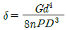
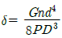
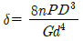
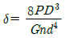
(정답률: 59%)
49. 볼트에 가해지는 충격하중에 대하여 충격 에너지 흡수 능력을 크게 하고자 할 때 다음 중 가장 적합한 방법은?
- 볼트의 길이를 길게 하고, 볼트의 단면적도 크게 한다.
- 볼트의 길이를 길게 하고, 볼트의 단면적은 작게 한다.
- 볼트의 길이를 짧게 하고, 볼트의 단면적은 크게 한다.
- 볼트의 길이를 짧게 하고, 볼트의 단면적도 작게 한다.
(정답률: 73%)
50. 원추 클러치에서 원추각이 마찰각 이하로 될 때 나타나는 현상으로 옳은 것은?
- 원추를 잡아 빼내는데 힘이 들어 불편하다.
- 축방향에 밀어 부치는 힘 P가 크게 된다.
- 시동할 때 클러치의 물리는 상태가 아주 원활하기 때문에 충격이 일어나지 않는다.
- 모양이 소형이 되므로 공작이 용이하다.
(정답률: 74%)
51. 주철의 성장을 방지하는 일반적인 방법이 아닌 것은?
- 흑연을 미세하게 하여 조직을 치밀하게 한다.
- C, Si 량을 감소시킨다.
- 탄화물 안정원소인 Cr, Mn, Mo, V 등을 첨가한다.
- 주철을 720℃ 정도에서 가열, 냉각시킨다.
(정답률: 31%)
52. 강의 쾌삭성을 증가시키기 위하여 첨가하는 원소는?
- Pb, S
- Mo, Ni
- Cr, W
- Si, Mn
(정답률: 58%)
53. 구상흑연 주철에서 흑연을 구상으로 만드는데 사용하는 원소는?
- Ni
- Ti
- Mg
- Cu
(정답률: 64%)
54. 담금질 조직 중 가장 경도가 높은 것은?
- 펄라이트
- 마텐자이트
- 솔바이트
- 트루스타이트
(정답률: 75%)
55. 노 안에서 페로실리콘(Fe-Si), 알루미늄 등의 강력한 탈산제를 첨가하여 충분히 탈산시킨 강괴는?
- 세미킬드 강괴
- 림드 강괴
- 캡드 강괴
- 킬드 강괴
(정답률: 70%)
56. 고속도강의 제조에 사용되지 않는 원소는?
- 텅스텐(W)
- 바나듐(V)
- 알루미늄(Al)
- 크롬(Cr)
(정답률: 81%)
57. 순철(pure iron)에 없는 변태는?
- A1
- A2
- A3
- A4
(정답률: 84%)
58. 탄소공구강 재료의 구비 조건으로 틀린 것은?
- 상온 및 고온경도가 클 것
- 내마모성이 작을 것
- 가공 및 열처리성이 양호할 것
- 강인성 및 내충격성이 우수할 것
(정답률: 75%)
59. 다음 재료 중 고강도 합금으로써 항공기용 재료에 사용되는 것은?
- Naval brass
- 알루미늄 청동
- 베릴륨 동
- Extra Super Duralumin(ESD)
(정답률: 74%)
60. 금형의 표면과 중심부 또는 얇은부분과 두꺼운 부분 등에서 담금질할 때 균열이 발생하는 가장 큰 이유는?
- 마텐자이트 변태 발생 시간이 다르기 때문에
- 오스테나이트 변태 발생 시간이 다르기 때문에
- 트루스타이트 변태 발생 시간이 늦기 때문에
- 솔바이트 변태 발생 시간이 빠르기 때문에
(정답률: 62%)
4과목: 기구학 및 CAD
61. 3차의 베지어 패치(Bazier Patch)를 정의하는데 필요한 제어점(control points)의 수는?
- 4개
- 8개
- 12개
- 16개
(정답률: 36%)
62. B-rap 방식에 의한 솔리드모델링 표현에서 오일러 (Euler)관계식을 적용하기 위하여 인위적인 경계요소(면, 모서리, 꼭짓점)의 추가가 필요한 형상은?
- 직육면체
- 사면체 각뿔
- 오각 기둥
- 원환(torus)
(정답률: 53%)
63. 다양한 형상을 미리 라이브러리로 형성해 놓고 이를 이용하여 형상을 모델링하는 솔리드 모델링 방법은?
- 경계 표현법(Boundary representation)
- CSG(Constructive Solid Geometry)
- 공간 분할법(Spatial decomposition)
- 스윕 표현법(Sweep representation)
(정답률: 44%)
64. 다음 중 전자가 형광체를 여기(excitation) 하여 발광을 하는 디스플레이 장치가 아닌 것은?
- CRT(Cathode Ray Tube)
- PDP(Plasma Display Panel)
- VFD(Vacuum Fluorescent Display)
- FED(Field Emission Display)
(정답률: 42%)
65. 다음은 솔리드를 표현하는 여러 방법 중 CSG(Constructive Solid Geometry)와 B-Rap (Boundary Representation)을 비교한 것이다. 틀린 것은?
- 모따기와 라운딩같은 모델의 국부 수정은 B-Rep 방식이 더 유리하다.
- CSG 모델에서는 모델의 생성과정에 관한 정보를 쉽게 알 수 있다
- 모델의 저장이 CSG가 명시적이라면 B-Rep은 묵시적이라 할 수 있다.
- CSG 모델을 B-Rep으로 전환하는 것은 항상 가능한 일이다.
(정답률: 34%)
66. CSG 방식을 이용하여 다음의 솔리드 모델을 생성 하고자 한다. A, B, C에 들어갈 불리언(boolean) 연산자를 차례대로 표시한 것은? (∪ : 합집합, ∩ : 교집합, - : 차집합)
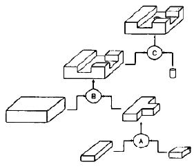
- ∪, ∩, ∩
- ∪, - -
- - ∪, -
- ∩, ∪, ∩
(정답률: 38%)
67. 곡선의 모델링시 주어진 데이터 점들의 양 끝점과 그 점에서의 접선벡터를 이용하여 3차 곡선을 정의하는 보간(interpolation)법은 무엇인가?
- Hermite interpolation
- Lagrange interpolation
- Gaussian interpolation
- Bezier interpolation
(정답률: 50%)
68. 다음 그림은 어떤 형상의 와이어프레임(wire frame)모델이다. 이 모델은 그림에서와 같이 보는 관점에 따라서 여러 가지 모양으로 해석될 수 있는 문제점을 지닌다. 어떠한 정보가 추가되어야 정확한 형상을 표현할 수 있는가?
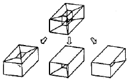
- Egde
- Surface
- Curve
- Vertex
(정답률: 53%)
69. 3차원(3D) 변환에 있어서는 X, Y, Z의 모든 축을 고려해야 한다. 3차원상의 한 점 P = [1 1 1]을 X축에 대해 반시계방향으로 90° 회전한 후의 점 좌표로서 알맞은 것은?
- [ 1 0 1 ]
- [ 1 1 -1 ]
- [ 1 -1 1]
- [-1 1 1 ]
(정답률: 알수없음)
70. 여러 가지 곡선을 모델링하는 경우의 일반적인 설명으로 틀린 것은?
- B-spline 곡선은 한 개의 조정점이 바뀌어도 몇 개의 곡선 segment만 영향을 받고 나머지는 변하지 않는다.
- Bezier 곡선은 n 차일 때 n+1 개의 조정점에 의하여 정의된다.
- [ 0 0 0 1 1 1]은 NURBS의 절점벡터(knots vector)로 볼 수 있다.
- NURBS 곡선표현은 모든 B-spline과 Bezier 곡선 표현이 가능한 것은 아니다.
(정답률: 34%)
71. 평마찰차와 홀마찰차가 같은 힘으로 밀어붙일 때 회전력은 어떻게 되겠는가?
- 어느 것이나 다 같다.
- 평마찰차가 1.5배 가량 크다.
- 평마찰차가 2배 가량 크다.
- 홈마찰차가 더 크다.
(정답률: 36%)
72. 원동자 지름 100mm, 회전수 500rpm이고, 종동차 지름 200mm인 벨트 전동장치에서 종동차의 회전수는 몇 rpm인가단, 벨트두께는 고려치 않는다.)
- 1000
- 500
- 250
- 2500
(정답률: 67%)
73. 왕복 슬라이더 크랭크기구에서 구성요소가 아닌 것은?
- 크랭크
- 슬라이더
- 벨트
- 커넥팅로드
(정답률: 62%)
74. 다음 평 벨트의 걸기 형태에서 접촉각이 가장 큰 것은?
- 이완측(slack side)을 위에 둔 바로걸기
- 이완측(slack side)을 아랫니 둔 바로걸기
- 엇 걸기(cross belting)
- 긴장 풀리(tension pulley)를 사용한 바로걸기
(정답률: 59%)
75. 기어 이(齒)의 크기를 표시하는 방법이 아닌 것은?
- 모듈
- 원주 피치
- 이끌 높이
- 지름 피치
(정답률: 47%)
76. 두 축이 만나지도 평행하지도 않는 경우에 사용된 기어로 바르게 짝지어진 것은?
- 하이포이드 기어, 웜 기어
- 웜 기어, 크라운 기어
- 크라운 기어, 베벨 기어
- 나사 기어, 헬리컬 기어
(정답률: 48%)
77. 다음 중 캠 기구를 응용한 장치는?
- 내연기관 밸브 개폐장치
- 리프트 장치
- 배력장치
- 제도기계
(정답률: 58%)
78. 기소 중에서 캠, 기어 등이 접촉하고 있는 대우는?
- 미끄럼대우
- 회전대우
- 구면대우
- 점선대우
(정답률: 알수없음)
79. 사일런트 체인을 사용하는 주목적으로 가장 적합한 것은?
- 보다 정숙한 운전
- 큰 동력전달
- 자유로운 변속
- 체인 핀 마모방지
(정답률: 45%)
80. 어떤 기구가 정지 상태에서 출발하여 1분 후에 시속 100km의 속도가 되었다. 이 기구의 가속도(m/s2)는?
- 0.463
- 1.67
- 13.89
- 27.78
(정답률: 34%)